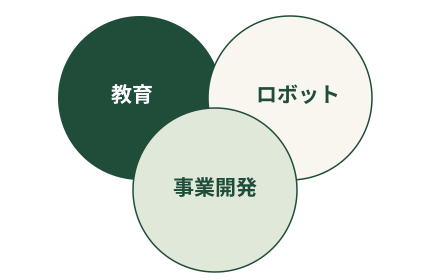

00 / INTRODUCTION自己紹介

活動の目次SELECTED ACTIVITIES
NPO法人燈
組織運営・ものづくり教育
ものづくりの機会を、運営から支える。
燈（ともしび）は、小中学生がものづくりに出会う機会をつくるNPO法人です。STEM教育を通じて、子どもたちが自分の興味や問いから、考え、つくり、試す体験を届けています。
私の担当
燈では理事・事務局長として、登記の準備や税務に関する実務に取り組みました。
FRC Team Hanabi
ロボット競技・アウトリーチ
ロボットをつくる。ものづくりを伝える。
Hanabiは、神山まるごと高専の国際ロボット競技FRCのチームです。競技ロボットの製作と大会への挑戦に加え、ものづくりの面白さを伝えるアウトリーチに取り組んでいます。
私の担当
入学当時からHanabiに所属し、チーム運営、社会貢献活動、ロボットに幅広く関わってきました。
Sony × Arc & Beyond
MESHの事業開発
MESHの可能性を、事業の視点で考える。
SonyのIoTブロック「MESH」の新しいビジネス用途を検討する共創に参加しました。顧客の課題を考えるところから、試作や検証へ進む、実際の事業開発を目的とした取り組みです。
私の担当
アプリケーションのUI（画面や操作方法）の検証では、まず自分で案を作り、AIを使って複数のパターンを作成しました。
コンタクト
CONTACT
ご連絡は、以下のメールアドレスからお願いします。